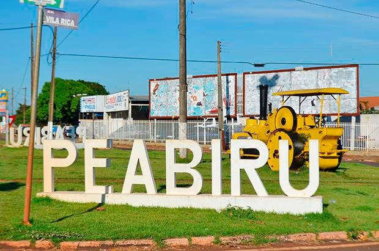

A agricultura peabiruense
O Município de Peabiru possui uma área de 46.933 hectares, com 1175 Produtores Rurais, sendo que 70% são Agricultores Familiares, distribuídos em pequenas propriedades, assentamentos e Vilas Rurais. A produção é diversificada, destacando-se as Culturas de Milho; Café; Mandioca; Amora; Olericultura e bovinocultura de leite e outras.
